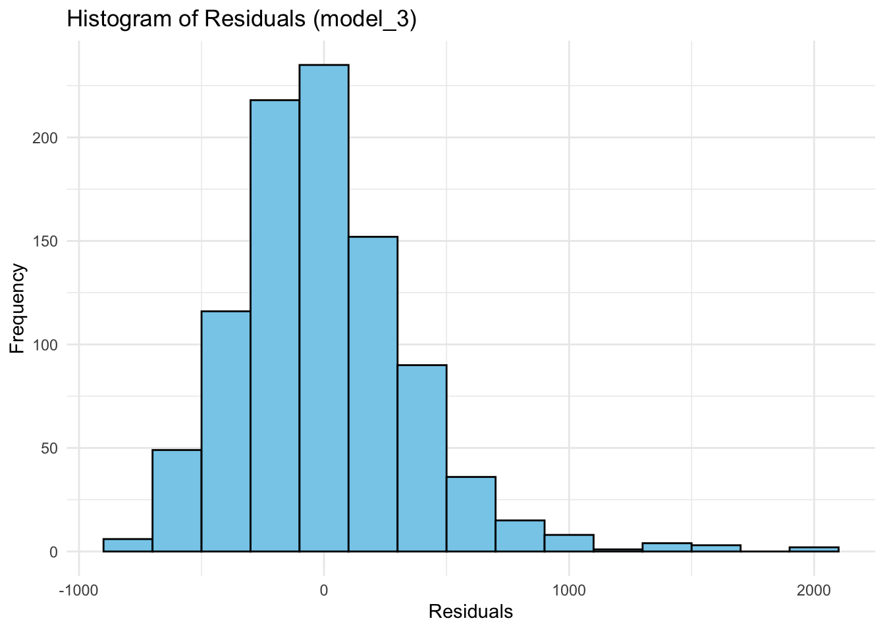
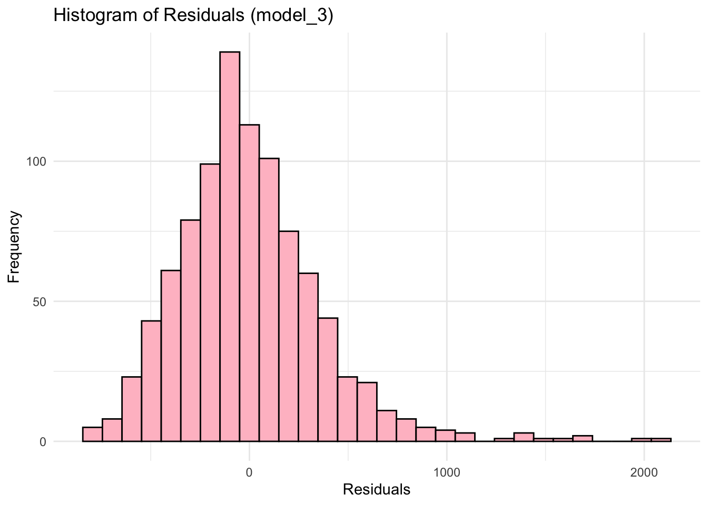

load("~/Desktop/R-workshops/assets/data/wage2.Rdata")6 Multiple Regression and Diagnostic Checks
6.1 Example: wage data
We will use the wage2 data set, which is already saved in Rdata format.
6.1.1 Task 1
Open wage2.Rdata (if it is not already open). You may so this through the menu or the command line using the load() function:
6.1.2 Task 2
Estimate a multiple regression model by regressing wage on IQ, educ, exper, urban, married and save it under name model_3 . Display the estimation results.
6.1.2.1 Guidance
# Linear regression
model_3 <- lm(wage ~ IQ + educ + exper + urban, data = wage2)
summary(model_3)
Call:
lm(formula = wage ~ IQ + educ + exper + urban, data = wage2)
Residuals:
Min 1Q Median 3Q Max
-797.64 -229.84 -38.35 185.10 2082.22
Coefficients:
Estimate Std. Error t value Pr(>|t|)
(Intercept) -628.8654 115.5135 -5.444 6.66e-08 ***
IQ 5.0564 0.9234 5.476 5.60e-08 ***
educ 56.0554 6.9340 8.084 1.94e-15 ***
exper 17.7194 3.0583 5.794 9.41e-09 ***
urban 159.9813 26.5107 6.035 2.30e-09 ***
---
Signif. codes: 0 '***' 0.001 '**' 0.01 '*' 0.05 '.' 0.1 ' ' 1
Residual standard error: 363.9 on 930 degrees of freedom
Multiple R-squared: 0.1936, Adjusted R-squared: 0.1901
F-statistic: 55.81 on 4 and 930 DF, p-value: < 2.2e-166.1.3 Task 3
6.1.3.1 Task
Test for the normality of the residuals
6.1.3.2 Guidance
We will be using the Jarque-Bera test for this purpose.
We first save the residuals from model_3 .
wage2$resid_m3 <- residuals(model_3)Plot the residuals to see the distribution. Please note that is not a part of the test but visualisation helps us to understand the data better.
library(ggplot2)
ggplot(wage2, aes(x = resid_m3)) +
geom_histogram(binwidth = 200, fill = "skyblue", color = "black") +
labs(title = "Histogram of Residuals (model_3)", x = "Residuals", y = "Frequency") +
theme_minimal()
aes(x = resid)specifies the residuals as the variable for the x-axis.geom_histogram()is used to create the histogram:binwidth = 200controls the width of the bins. You can adjust this depending on how detailed you want the histogram to be.fillsets the color inside the bars, andcoloradds a border around them for better visibility.
labs()adds labels for the title and axes.theme_minimal()gives a clean, simple look to the plot - try the plot with and without this.
You may also let ggplot choose the number of bins automatically:
ggplot(wage2, aes(x = resid_m3)) +
geom_histogram(fill = "pink", color = "black") +
labs(title = "Histogram of Residuals (model_3)", x = "Residuals", y = "Frequency") +
theme_minimal()`stat_bin()` using `bins = 30`. Pick better value with `binwidth`.
We may use jarque.bera.test for the normality test. It is in the tseries package.
# install.packages("tseries")
library(tseries)Registered S3 method overwritten by 'quantmod':
method from
as.zoo.data.frame zoo jarque.bera.test(wage2$resid_m3)
Jarque Bera Test
data: wage2$resid_m3
X-squared = 699.59, df = 2, p-value < 2.2e-16The p-value of the test is almost zero. We reject the null hypothesis of normal distribution. The residuals from model_3 are not normally distributed.
6.1.4 Task 4
6.1.4.1 Task
Test for the functional form.
6.1.4.2 Guidance
We may use this to check whether there are any omitted variables or non-linearity in the model. The test is Ramsey RESET.
library(lmtest)Loading required package: zoo
Attaching package: 'zoo'The following objects are masked from 'package:base':
as.Date, as.Date.numericresettest(model_3)
RESET test
data: model_3
RESET = 3.8665, df1 = 2, df2 = 928, p-value = 0.02127The default resettest includes second and third powers of the fitted values in the test regression. You may change this using the power option. Below we include from second to the fourth power of fitted values.
resettest(model_3, power = 2:4)
RESET test
data: model_3
RESET = 2.8504, df1 = 3, df2 = 927, p-value = 0.03646The decision depends on the chosen significance level. We reject the null hypothesis of correct functional form if we choose a 5% significance level.
6.1.5 Task 5
6.1.5.1 Task
Test for heteroscedasticity.
6.1.5.2 Guidance
We apply Breusch-Pagan heteroscedasticity test.
bptest(model_3)
studentized Breusch-Pagan test
data: model_3
BP = 16.355, df = 4, p-value = 0.002578The p-value is smaller than 0.05. Hence, we reject the null of no heteroscedasticity at 5% significance level. There is heteroscedasticity.
6.1.6 Task 6
6.1.6.1 Task
Test for autocorrelation in the model
6.1.6.2 Guidance
This is a trick question! Autocorrelation problem is related to time series data whereas we have cross-section data here. Autocorrelation problem is irrelevant here.
6.1.7 Task 7
6.1.7.1 Task
Replicate the above using logarithmic wages. Has there been a change in model diagnostics? Which form do you prefer to use for inference?
6.1.7.2 Guidance
You may use the script file to copy-paste all the code and make the minor changes (i.e. replacement of wage with ln_wage).